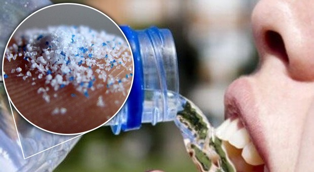
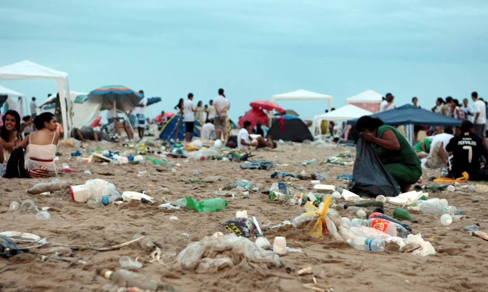

Por que se importar com a limpeza dos oceanos?
Caso a poluição dos oceanos continue a aumentar, a saúde de bilhões de pessoas pode ser afetada, assim como a de diversas espécies marinhas, a qualidade e segurança alimentar, até o turismo.
Vida marinha

88% das espécies marinhas estudadas foram negativamente impactadas pela poluição de plásticos e é estimado que até 90% das aves marinhas e 52% das tartarugas marinhas ingerem plástico. Os impactos mais visíveis dos detritos plásticos são a ingestão, asfixia e emaranhamento de centenas de espécies marinhas. Animais selvagens marinhos, como aves marinhas, baleias, peixes e tartarugas, confundem lixo plástico com presas; a maioria morre de fome quando seus estômagos ficam cheios de plástico. Eles também sofrem de lacerações, infecções, capacidade reduzida de nadar e lesões internas. Os plásticos também ajudam a transportar espécies marinhas invasoras, ameaçando assim a biodiversidade marinha e a cadeia alimentar.
Qualidade alimentar
Microplásticos foram encontrados na água da torneira, cerveja, sal e em todas as amostras coletadas dos oceanos do mundo, incluindo o Ártico. Vários produtos químicos usados para produzir materiais plásticos são conhecidos por serem cancerígenos e interferir no sistema endócrino humano, causando distúrbios de desenvolvimento, reprodutivos, neurológicos e imunológicos em humanos e animais selvagens. Recentemente, microplásticos foram encontrados na placenta humana, mas mais pesquisas são necessárias para determinar se esse é um problema generalizado.
Turismo
Os resíduos plásticos destroem o valor estético dos destinos turísticos, levando a um declínio nas receitas do turismo. Também incorre em custos econômicos substanciais associados à limpeza e manutenção do local. O acúmulo de lixo plástico nas praias pode impactar negativamente a economia de um país, a vida selvagem e a saúde física e mental das pessoas. A imagem ao lado mostra um exemplo disso, na famosa praia de Copacabana